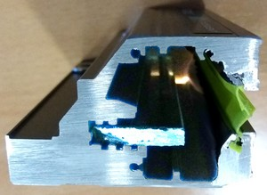
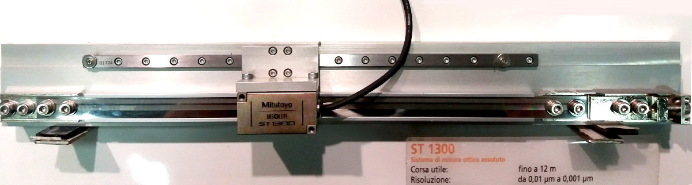

Lineární pravítka

Lineární odměřovací systémy (pravítka) jsou optické nebo indukční snímače s pevnou částí (pravítko) a snímací hlavou schopné vysoce přesného měření délek a odvozeně též rychlosti pohybu. Určité typy pravítek mohou být použity do délky až 12 m, nejpřesnější pravítka mají rozlišení 0,001 µm (=1 nm).
Podle různých kritérií je možné lineární snímače rozdělit do několika hlavích skupin:
Dle konstrukce:
Otevřená pravítka (ST, separate types):
Systém pravítka se skládá z hlavního pravítka s měřícím rastrem (u optických systému zpravidla za skla) a snímací hlavy. Hlava se pohybuje v těsně nad pravítkem, fakticky se ho ale nedotýká. Nevzniká zde jakýkoliv silový přenos mezi těmito dvěma částmi. S použitím otevřených systémů je třeba počítat přímo ve fázi návrhu aplikace, aby byly co nejlépe zajištěny poměrně přísné podmínky pro montáž a prostředí tohoto snímacího systému.
Uzavřená pravítka (AT, assemby types):
Uzavřená pravítka zapouzdřují funkční systém otevřených pravítek do kovového pouzdra, které tak představuje montážní a ochranný systém vlastního odměřovacího mechanismu. Snímací hlava je vedena samostatným vedením, spára mezi hlavou a tělem pravítka je kryta plastovými chlopněmi. V tomto případě již dochází k dotyku částí hlavy a pouzdra pravítka a dochází tak i k určitému (malému) silovému působení. Uzavřená pravítka dovolují montáž i na vnější části zařízení, některé typy (indukční) mají velkou odolnost proti vlivu prostředí a umožňují i trvalou práci za ostřiku tekutinou.

Řez tělem uzavřeného pravítka s optickým odměřováním (inkrementální typ). Uprostřed skleněné pravítko se stupnicí.
Podle principu odměřování
Optická pravítka:
Vyznačují se vysokou přesností a citlivostí. Jsou náchylnější na znečištění (prach, olej aj.)
Indukční pravítka:
Vyznačují se mimořádnou odolností proti vlivům prostředí (IP67) a jsou proto vhodné do prostředí s vysokým rizikem možného znečištění. Mohou pracovat i v prostředím s ostřikem tekutiny.
Podle typu výstupních hodnot
Inkrementální:
Pravítka generují impulzy, jejichž počet je závislý na uražené vzdálenosti. Pravítko tedy neposkytuje údaj o okamžité poloze, ale pouze o vzdálenosti uražené od předchozího bodu. V praxi je tedy třeba nejprve dosáhnout referenčního bodu a k němu pak určovat vzdálenost podle počtu získaných impulzů.
U inkrementálních systémů leží zpravidla každých 50 mm referenční bod, existují i pravítka a kódováním vzdálenosti po 20 mm. V tomto případě stačí max. 20 mm pohyb (k nejbližší délkové značce), aby systém určil přesnou polohu.
Absolutí:
Systém absolutního odměřování je založen získání polohy na základě hodnot získaných z více paralelních stupnic (hrubé, střední, jemné, …). Díky tomu může systém kdykoliv určit přesnou polohu i bez nutnosti předchozího pohybu.
Podle účelu použití
Pro DRO systémy
DRO (digital readout) systémy, známé též jako systémy digitálního odměřování (2D, 3D), jsou systémy pro odměřování a zobrazování dat. Ústředním prvkem je zobrazovací a ovládací panel obsluhy, ke kterému jsou připojena právě odměřovací pravítka. Typické použití je na obráběcích strojích, kde obsluze umožňují v reálném čase sledovat pohyb obráběcího nástoje, resp. sledovat aktuální rozměry obráběného dílu.
Pravítka pro DRO jsou pravítka běžné konstrukce založená na indukčním nebo optickém principu. Jsou uzavřeného typu. Jejich elektrické rozhraní, kabeláž a připojovací konektory jsou přizpůsobeny doporučovaným DRO jednotkám, takže je velmi snadné nakonfigurovat a fyzicky sestavit kompletní sestavu DRO jednotky + potřebných pravítek. Uvedená pravítka jsou často též nazývána jako univerzální pravítka.
Pro NC stroje
Pravítka pro NC systémy tvoří nejširší skupinu pravítek jak otevřeného, tak uzavřeného typu. Existuje zde mnoho variant mechanického provedení, aby bylo vyhověno potřebám pro provoz a zástavbu v nejrůznějších typech strojů. Specifická jsou např. pásková pravítka, kde odměřovací částí je pás z ocelového plechu, na kterém je vyryta odměřovací stupice stupnce. Obdoubou téhož jsou i nalepovací pravítka (oboje tedy otevřeného typu).
Další variabilita je zde v typech výstupního signálu. Výstupní signál odpovídá některému ze standardů používaných v oblasti NC řídících systémů.
Otevřený typ pravítka ST-1300 (NC typ). Ocelový pásek se stupnicí ve vodící liště, ve středu snímací hlava. V pravé části je napínací mechanismus pásky. 